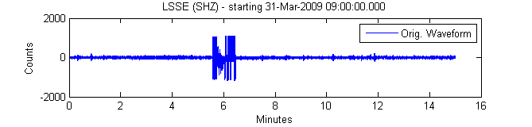
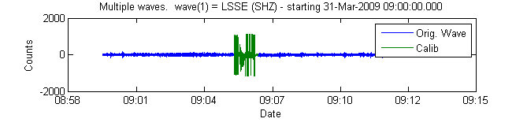
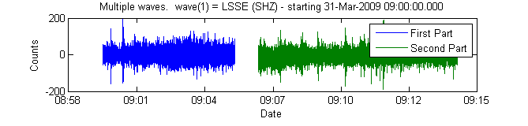
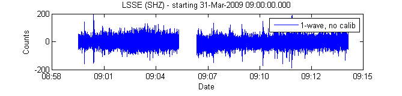

Waveform Suite Example: Remove a Calibration Pulse
This example shows how to load data into a waveform, filter it, do a few manipulations, and then plot the results.
Created by Celso Reyes for use with the Waveform Suite April, 2009
Contents
Load the data
For this example, I'll load some data that I'm sure contains a calibration pulse. While the example data is stored as a waveform in a .mat file, declaring a different datasource will let you grab it from just about anywhere else.
ds = datasource('file','J:/DATA/example.mat'); % My predefined winston_datasource was loaded at startup. ds = winston_datasource; scnl = scnlobject('LSSE','SHZ','AV','--'); w = waveform(ds,scnl,'3/31/2009 09:00:00','3/31/2009 09:15:00');
2009-04-14 17:09:59: pubavo1.wr.usgs.gov:16022/connection opened. 2009-04-14 17:10:04: pubavo1.wr.usgs.gov:16022/connection closed.
Here is what the original data look like
plot(w,'xunit','minutes'); legend('Orig. Waveform');
Tease out the calibration pulse
Here are the characteristics/assumptions used to detect a calibration pulse:
- A calibration pulse exists in the data
- First section of pulse has a 21 Hz dominant signal
- At 21 hz, the dominant signal is the calibration pulse
- Calibration pulse is 60 seconds long
Here's the filter we'll use: bandpass 20-22 Hz butterworth, 5 poles
calibFilter = filterobject('b',[20,22],5); % get the envelope of the filtered data h = hilbert(filtfilt(calibFilter,w)); % use the raw numbers for comparison d = double(h); % The calibration start is marked by the first big spike in the filtered % data that reaches at least 3/4 the maximum amplitude calibStartIndex = find(d> (max(h).* 0.75),1,'first'); % Then, determine the end by knowing the pulse lasts one minute calibEndIndex = calibStartIndex + get(w,'freq') * 60; dv = get(w,'timevector'); %Extract the calibration pulse for later use (if desired) calibWaveform = extract(w,'time',dv(calibStartIndex),dv(calibEndIndex));
plot waveform along with the detected calibration pulse
plot([w,calibWaveform],'xunit','date'); legend('Orig. Wave','Calib');
plot the two individual peices, showing the gap between
Now, grab the segments of the data to either side of the pulse.
noCalib = extract(w,'time',dv([1,calibEndIndex]),dv([calibStartIndex-15,end])); plot(noCalib,'xunit','date'); legend('First Part','Second Part');
now, make a grand-unified waveform
w = combine(noCalib) plot(w,'xunit','date'); legend('1-wave, no calib');
w =
station: LSSE network: AV
channel: SHZ location: --
start: 31-Mar-2009 09:00:00.000
duration(00:15:00.020)
data: 45001 samples
freq: 50.000000 Hz
units: Counts
With misc fields...
* HISTORY: [3x2] cell object

Please send feedback to: celso <at> gi <dot> alaska <dot> edu
| Was this useful? | YES | NO |